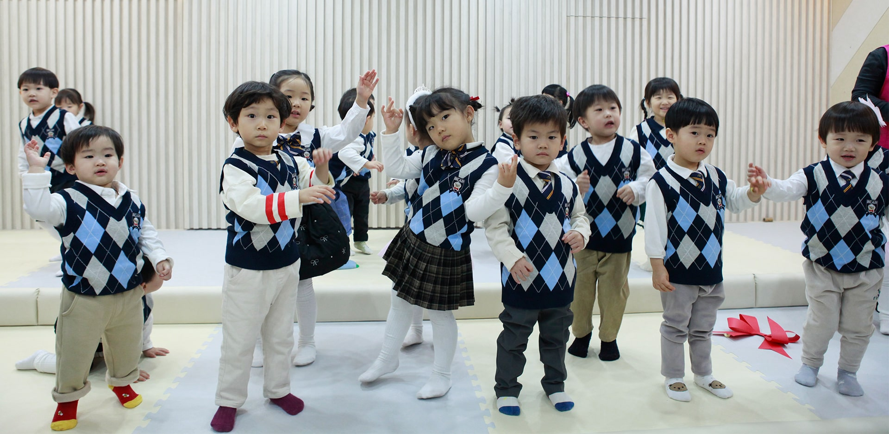
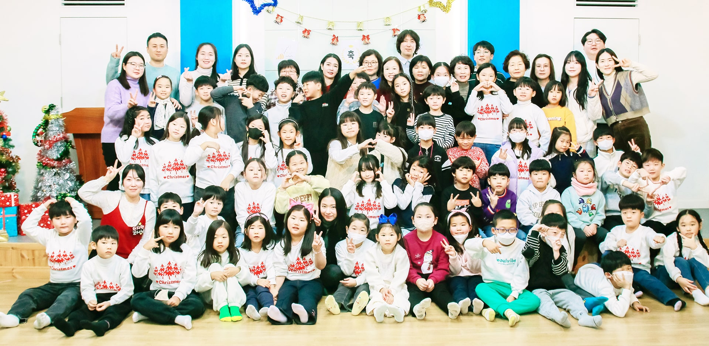
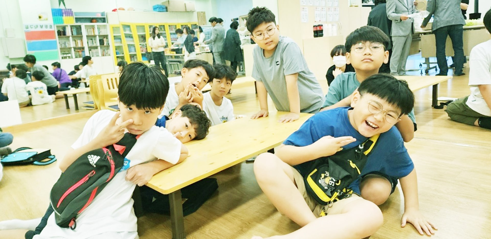
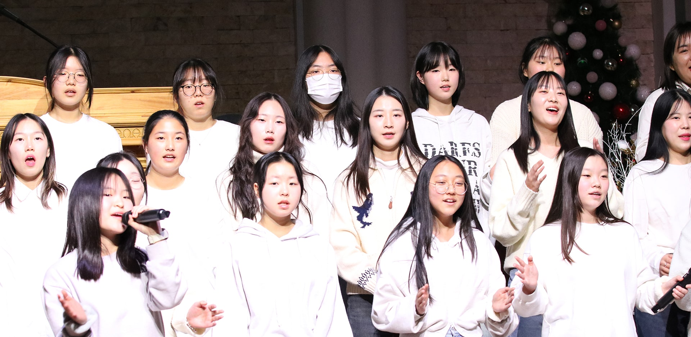
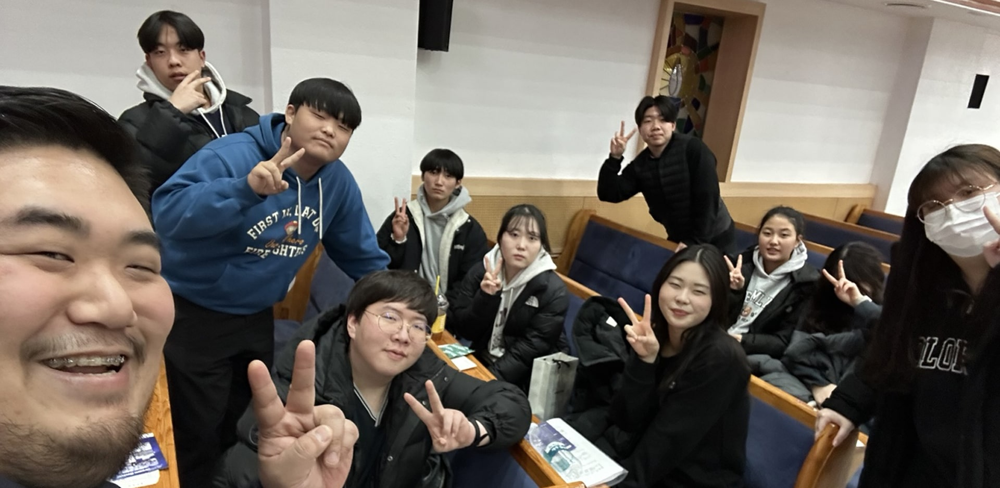
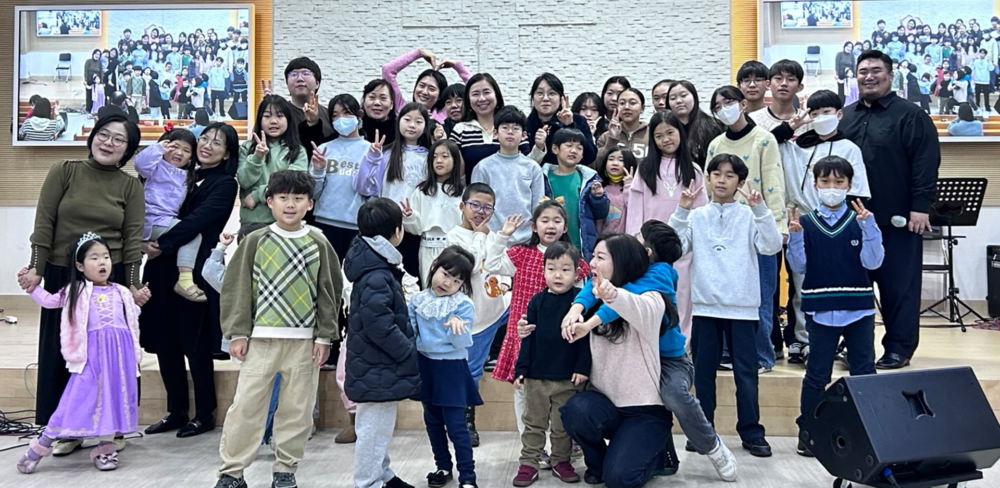

 영아부 1세부터 4세까지의 영아에게 믿음의 씨앗을 심는 곳입니다. 예배 시간: 주일 오전 11:00 장소: 사랑성전 [1F] 대상: 1-4세 담당교역자: 이진희 간사 자세히 보기
유치부 유치부 어린이들이 찬양과 율동을 통해 하나님을 만나는 즐거운 예배 시간입니다. 예배 시간: 주일 오전 11:00 장소: 믿음성전 [2F] 대상: 유치부 담당교역자: 이명화 간사 자세히 보기
 유년부 유년부 어린이들이 성경 이야기와 말씀 암송을 통해 신앙의 기초를 다집니다. 예배 시간: 주일 오전 11:00 장소: 소망성전 [2F] 대상: 유년부 담당교역자: 천지연 간사 자세히 보기
 초등부 초등부 어린이들이 성경의 진리를 배우고 신앙의 정체성을 확립합니다. 예배 시간: 주일 오전 11:00 장소: 화평성전 [4F] 대상: 초등부 담당교역자: 황창조 목사 자세히 보기
중등부 중학교 1-3학년 청소년들이 말씀을 통해 정체성을 확립하고 믿음의 리더로 성장합니다. 예배 시간: 주일 오전 11:00 장소: 벧엘성전 [4F] 대상: 중학교 1-3학년 담당교역자: 김민기 목사 자세히 보기
 고등부 고등학교 1-3학년 청소년들이 복음의 능력을 경험하고 세상을 변화시키는 믿음의 세대로 세워집니다. 예배 시간: 주일 오전 9:00 장소: 벧엘성전 [4F] 대상: 고등학교 1-3학년 담당교역자: 최주찬 전도사
 청년부 대학생 및 청년들이 하나님 나라의 비전을 품고 세상을 섬기는 제자로 성장합니다. 예배 시간: 주일 오후 1:00 장소: 예루살렘성전 [3F] 추가 모임: 화요기도 오후 8:00 / 수요예배 오후 8:30 대상: 대학생 및 청년 담당교역자: 김정한 목사
자세히 보기  English Worship English worship service for international members and Korean members who prefer English worship. Service Time: Sunday 1:20 PM Location: Bethel Chapel [4F] Pastor: Rev. Joo-Chan Choi